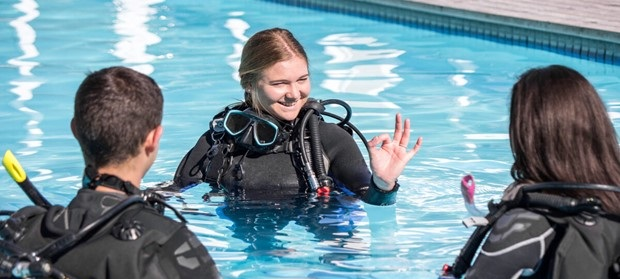

Reefstore Restoration Education
At Coral Reef Restoration Education, we offer high-quality, scientifically backed video content designed to enhance Scuba Diving Certification programs, covering topics in marine biology, environmental science, and conservation. Our videos provide in-depth knowledge and practical skills essential for understanding and implementing coral reef restoration projects.

Video Content Offerings
- 1. Introduction to Coral Reef Ecosystems
- Overview of coral reef biology and ecology.
- Importance of coral reefs to marine life and human communities.
- Current threats to coral reefs and their global impact.
- 2. Coral Reef Restoration Techniques
- Detailed explanations of various restoration methods:
- Coral Gardening: Steps to cultivate and transplant corals.
- Artificial Reefs: Design and implementation of man-made reef structures.
- Coral Propagation: Techniques for fragmenting and growing corals.
- Microfragmentation: Cutting-edge methods to accelerate coral growth.
- Case studies showcasing successful restoration projects.

- 3. Fieldwork and Monitoring
- Practical skills for conducting field surveys and monitoring coral health.
- Techniques for assessing coral reef recovery and biodiversity.
- Data collection and analysis methods.
- 4. Sustainable Practices and Community Engagement
- Best practices for minimizing human impact on coral reefs.
- Strategies for engaging local communities in conservation efforts.
- Sustainable tourism guidelines to protect reef ecosystems.
Benefits of the Certification
- Enhance Learning Outcomes: Our videos provide comprehensive, up-to-date information from leading experts, ensuring your certification programs are robust and credible.
- Flexible Integration: Easily incorporate our video content into your existing curriculum or use them as standalone modules.
- Engaging and Interactive: High-quality visuals and clear explanations make complex scientific concepts accessible and engaging for learners.
- Support Continuing Education: Offer advanced training for professionals seeking to expand their knowledge and skills in coral reef restoration.

How to Collaborate
- Customized Solutions: We can tailor our video content to meet the specific needs of your certification programs, ensuring alignment with your educational goals.
- Subscription Packages: Choose from a range of subscription options to access our full library of videos, including regular updates and new releases.
- Exclusive Access: Provide your learners with exclusive access to cutting-edge restoration techniques and the latest scientific research.
Get Started
Enhance your certification programs today with our expert-led coral reef restoration videos. Contact Us to learn more about our offerings, customization options, and pricing.
Together, we can educate and empower the next generation of marine conservationists.